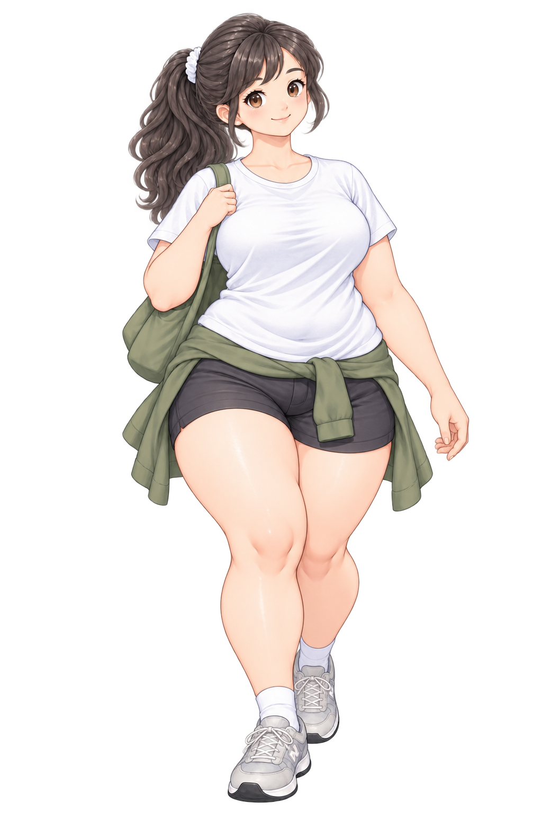

SANPO

天気を確認中現在地から取得します
今日はどっち方面いく？


0% / 今日の目標
今日の歩数
0 / 7,000 歩
距離目標 5.0 km
GPSを準備中
0%
消費カロリー
0kcal
歩行時間
0分
距離
0.0km
LIVE SANPO
今日の歩きをウォッチ中
0%
歩数
0歩
距離
0.0km
消費
0kcal
目標まで
5.0km
今日のがんばり
消費カロリーを身近な食べ物に置き換えると


地図をタップしてスタート地点を設定
距離-km
時間-分
歩数-
消費-kcal
コースを作る
今日の気分に合わせてルートの特性を選べます
歩きやすさと距離のバランスを見て、気軽な周回コースを選びます。
コースを作成中…
00:00:00
歩数
0
距離
0.00 km
カロリー
0 kcal
いってみよっか。
総歩数0
総距離0.0 km
総カロリー0 kcal
歩行時間0 分
YOUR MOTIVATION
最近の散歩
プロフィール
km
キャラクター
体型変化プレビュー
今日の距離 ÷ 目標距離でキャラが変化します
0%
0%25%50%75%100%
アプリ
犬を表示する
日次リセット毎日 0:00